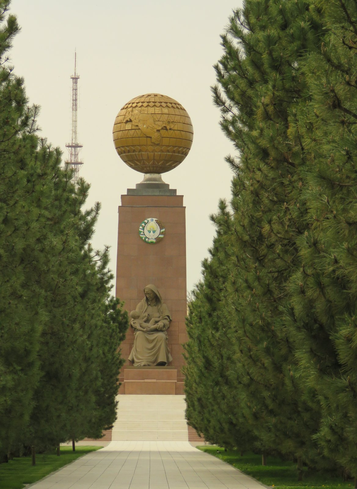

1991-yil 29-dekabr: mustaqillik referendumi va ilk prezident saylovi
1991-yil 29-dekabrda Oʻzbekistonda bir kunning oʻzida ikki ovoz berish oʻtkazildi: mustaqillikni tasdiqlovchi referendum (98,26% yoqlab) va ilk toʻgʻridan-toʻgʻri prezident saylovi (Islom Karimov — 87,14%, Muhammad Solih — 12,49%). Aniq sanalar va raqamlar bilan, manbali tarix.

Oʻzbekiston mustaqilligini 1991-yil 31-avgustda eʼlon qilgan edi. Toʻrt oy oʻtib, 29-dekabr kuni bir vaqtda ikki ovoz berish — mustaqillikni tasdiqlovchi umumxalq referendumi va mamlakat tarixidagi ilk toʻgʻridan-toʻgʻri prezident saylovi oʻtkazildi. Quyida bu voqealar aniq sanalar va rasmiy raqamlar bilan, manbalar asosida bayon etiladi.
Kontekst: nega ovozga qoʻyildi
1991-yil 31-avgustda Oliy Kengashning favqulodda sessiyasida mustaqillik eʼlon qilinib, mamlakat “Oʻzbekiston SSR”dan “Oʻzbekiston Respublikasi”ga oʻzgartirildi. SSSR 1991-yil 26-dekabrda rasman tarqab ketdi. Oʻzbekiston — SSSR allaqachon tarqaganidan keyin mustaqillik boʻyicha referendum oʻtkazgan yagona sobiq sovet respublikasi boʻldi: 29-dekabrdagi ovoz berish eʼlon qilingan mustaqillikni umumxalq irodasi bilan tasdiqlashga qaratilgan edi.
29-dekabr referendumi
Saylovchilarga qoʻyilgan savol quyidagicha edi: “Siz Oʻzbekiston Respublikasi Oliy Kengashi eʼlon qilgan Oʻzbekiston Respublikasining davlat mustaqilligini maʼqullaysizmi?” Rasmiy natijaga koʻra, ovoz berganlarning 98,26 foizi (9 718 155 ovoz) “ha”, 1,74 foizi (172 294 ovoz) “yoʻq” dedi. Referendumda ishtirok darajasi qariyb 94 foizni tashkil etdi; roʻyxatga olingan saylovchilar soni 10 515 066 nafar edi.
Ilk prezident saylovi
Xuddi shu kuni — 29-dekabrda — mamlakat tarixidagi ilk toʻgʻridan-toʻgʻri prezident saylovi ham oʻtkazildi. Unda ikki nomzod raqobatlashdi: amaldagi rahbar, Oʻzbekiston Xalq demokratik partiyasi qoʻllab-quvvatlagan Islom Karimov va “Erk” demokratik partiyasi rahbari, shoir Muhammad Solih. Rasmiy natijaga koʻra, Islom Karimov 87,14 foiz (8 514 136 ovoz), Muhammad Solih 12,49 foiz (1 220 474 ovoz) toʻpladi; “hammaga qarshi” degani 0,37 foizni (36 525 ovoz) tashkil etdi.
Bu Oʻzbekiston tarixida haqiqiy, raqobatchi muxolifat nomzodi ishtirok etgan yagona prezident saylovi boʻlib qoldi — keyingi barcha saylovlarda faqat ramziy muxolifat qatnashdi. Ovoz berish jarayoni haqida: dastlabki, norasmiy natijalar ancha yaqin raqobatni koʻrsatgani, keyin qayta hisob-kitobda Karimovga birinchi turdayoq gʻalaba berilgani xabar qilingan; mustaqil kuzatuvchilar rasmiy hisobga eʼtiroz bildirgan va saylovni “erkin va adolatli emas” deb baholagan. Muhammad Solihning oʻzi keyinchalik AQSh Xelsinki komissiyasiga aslida ~30 foiz ovoz olgan boʻlishi mumkinligini aytgan. Bu bahsli baholar tarixiy faktlar sifatida keltiriladi; rasmiy raqamlar esa 87,14% / 12,49% dir.
Yetaklovchi sanalar
Mustaqillikka olib borgan bosqichlar: 1990-yil 24-martda Islom Karimov Oliy Kengash tomonidan Oʻzbekiston SSR prezidenti etib saylandi (491 tarafdor, 7 qarshi); 1990-yil 20-iyunda Oʻzbekiston SSR Suverenitet deklaratsiyasini qabul qildi va oʻz qonunlariga sovet qonunlaridan ustunlik berdi; 1991-yil avgustidagi Moskvadagi davlat toʻntarishi urinishining barbod boʻlishi mustaqillik eʼloniga bevosita turtki berdi; 31-avgust kuni mustaqillik eʼlon qilindi (Mustaqillik kuni 1-sentabrda nishonlanadi).
Keyin nima boʻldi
1995-yil 26-martda oʻtkazilgan referendum Islom Karimovning prezidentlik muddatini navbatdagi saylov oʻrniga 2000-yilgacha uzaytirdi; rasmiy natijaga koʻra u 99,6 foiz ovoz bilan maʼqullandi. Muxolifat nomzodi Muhammad Solih 1992-yil iyunda parlamentdan iste’foga chiqdi, 1993-yil aprelda hibsga olindi, keyin surgunga (Ozarbayjon, soʻng Turkiya) ketdi; 1999-yildagi Toshkent portlashlaridan soʻng gʻoyibona 15 yilga hukm qilindi va chetdan “Erk”ka rahbarlik qilishda davom etdi.
Umumiy tarixiy ahamiyat: 29-dekabr 1991 ovoz berishi eʼlon qilingan mustaqillikni umumxalq irodasi bilan mustahkamlagan burilish nuqtasi boʻldi. Referendum va prezident saylovi bir kunda, bitta saylov kuni doirasida, 10 515 066 nafar roʻyxatga olingan saylovchi ishtirokida oʻtkazildi.